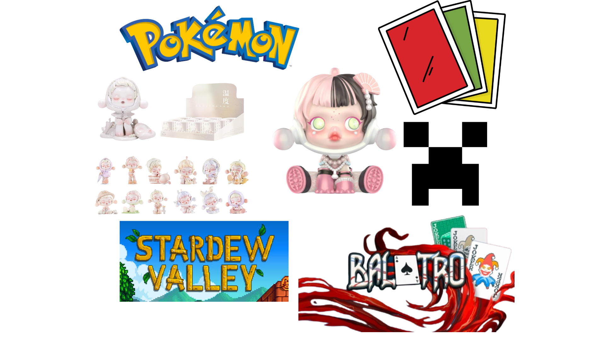

My Skills, Hobbies, and Interests.
I’ve always believed that skills help shape who we are,
and a few of mine really define how I approach life. I learned coding through school. During my junior high school, we were taught
how to code in a language that I can’t seem to remember. That subject sparked something in me which made me focus on my coding skills,
which is why I took BSIT as my program for college. I don’t have any projects right now, but here are the languages that I know how to code;
Python, Java, C#, SQL, and HTML. I always had an itch in which I wanted to create the things in my mind, that's why coding really interested me.
Now, since I’m an IT student, computer literacy is another skill that is essential that I need to have. My program uses a lot of computers,
so knowing how to understand different softwares has become easier for me.
Another skill that I’ve adapted, funnily enough, is adaptivity. Ever since I was young, I was able to
mask myself on what the situation was. I feel like I’m a chameleon where I can be what you need me to be. This skill is important because
it can help me with solving problems and it can help view problems in multiple perspectives to find solutions. Logical Thinker is another
skill that I find myself having. I usually solve problems by breaking them down, which helps me figure out the best solution whatever
comes my way.
To the non-academic side of my skill, I've always been fascinated with music, that’s why I managed to learn how to play
the guitar and piano. Though I'm not very good at it, I think I know how to do the basics well enough. Last skill that I will mention
is drawing. Drawing comes naturally to me. I can manage to copy the things that I see, however, I think God does not want me to have
both the talent to copy and the talent to create art. At the end of the day, these skills all come together to shape how I approach
challenges and express myself, and I’m excited to see how they’ll continue to grow as I move forward in life.
Hobbies are an essential part of my life, and I've gathered quite a few that
keep me busy and entertained. From cooking to letting my mind wander, each of these
activities brings something unique to my routine. Now, from a young age, I was
really interested in cooking. I would watch my mother prepare our food and I would help her with
the cooking. This leads to me also cooking for the family, which is very fun for me.
One of the dishes that I like to cook is anything involving chicken. I would cook
fried chicken, hainanese chicken, creamy mushroom chicken, and many more.
Now, when cooking comes, eating also goes, which is why another hobby of mine
is eating. I think this also interconnects with cooking since all the food that
I cook, I also eat. I am also participating in “food trips”, where me and my
family eat food that is interesting to us.
Another hobby of mine is singing. I think
almost everyone around me also loves singing, which is why I also participate in this. My hobby of
singing, I think, started from my mother who often sings in our house which influenced me to sing
also on the karaoke during our free time. The genres that I sing are often jazz-ish songs since
that’s the songs that are perfect for my voice. Now, listening to music is one of my favourite
things to do! I can basically do everything while listening to music. Now, I don’t really have
a specific genre that I listen to since I listen to the songs that I find interesting, which can
be everything.
Not being funny and quirky, another hobby of mine is sleeping/
daydreaming. If I could close my eyes or daydream, I would do it. In school, at home, in the mall,
during my commute, I would daydream/rest my eyes every opportunity that I get. I managed to create
a world in my head that is continuously expanding, which keeps me occupied during my free time. At
the end of the day, I feel lucky to have all these hobbies to escape into, whether it's cooking,
singing, eating, or just letting my mind roam free. I guess you could say, my life is a mix of
good food, music, and a lot of naps.
I developed a lot of interest recently to distract myself that I have to become a full functioning adult. First is that I’ve been interested in Pokemon, most specifically TCG or Trading Card Games. It is fun to collect and open packs especially if you get rare cards. Though, it can be hard in the bank since these packs are not cheap at all! I’ve managed to accumulate at most $100 worth of cards and hopefully I don’t spend anymore than my earnings. Another thing that got my interest lately are vinyl figurines, mostly Skull Panda and Smiski. There is something about these two that is really fascinating for me, especially its unique designs. The only downside with this is that it also costs a lot of money like the pokemon cards. Hopefully in the future I get a lot of money to fund these interests (and hopefully I don’t get too addicted to them).
Last interest is playing video games. The genre that I mostly play is farming and simulators, but sometimes I play other genres like strategy games and first person shooter. The specific game that I play is Stardew Valley. Now this game can be seen on the outside as a chill game, but if you are asking me, this game is one of the most stressful games that I’ve played. You have to strategize from the moment you wake up til the time you sleep. Moving on, another video game that interests me is Minecraft. The video game Minecraft is basically my childhood. I can play it all day long, as a single player or with friends. Next video game is Balatro. Balatro is basically a rogue-like card game which is somewhat a play off of the card game poker, however, this game adds like powerups and points to the game that you have to beat. Last video game that I will mention is GTA V. While it is a bit different from the previous games that I’ve mentioned since this game is a little bit on the violence side, personally, this is one of the best games that has ever been made! The story line and the gameplay is one of the best that I’ve seen, which made it one of my interests.
Hopefully, as time goes by, I can continue enjoying these interests without feeling guilty about spending money on them. Maybe one day, I’ll be able to afford them without worrying too much, and who knows? These interests might lead me to something even greater in life. For now, I’ll just keep having fun and balancing everything like the full functioning adult I’m trying to be.
